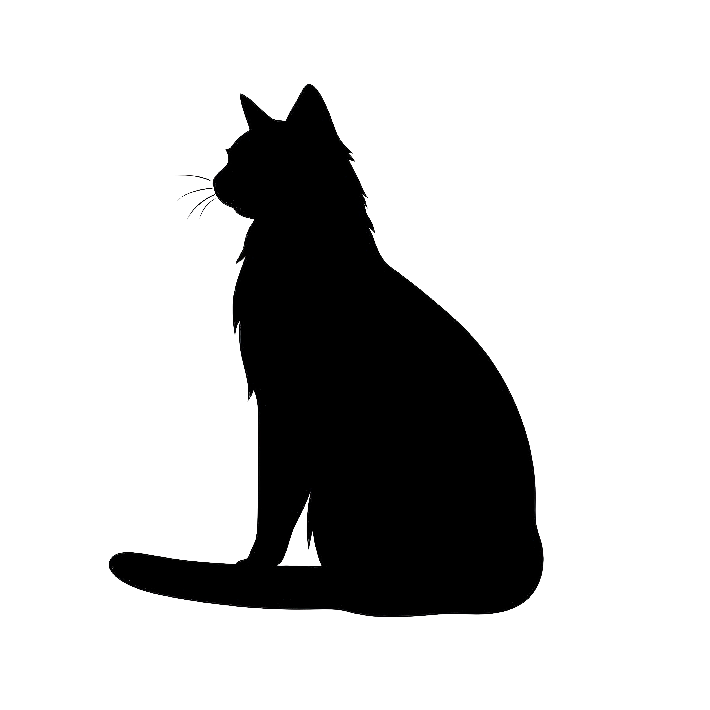
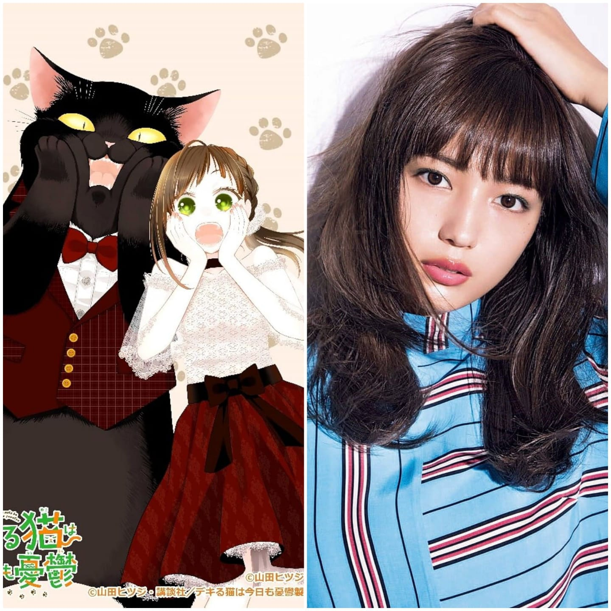
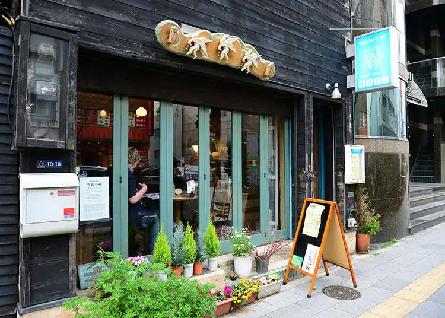

Neko NEWS |
 |
THE MASTERFUL CAT IS DEPRESSED AGAIN TODAY IS GOING TO GET A LIVE ADAPTION |
[17/03/2024] In the upcoming live-action adaptation of "The Masterful Cat is Going to Depressed Again," Sakada emerges as a compelling casting choice, perfectly embodying the multifaceted character with depth and nuance. With a repertoire of roles that showcase versatility and emotional range, Sakada brings a wealth of experience to the portrayal of the titular feline. Known for their ability to seamlessly transition between comedic charm and poignant vulnerability, Sakada is poised to capture the essence of the cat's complex journey with finesse. As the story delves into themes of introspection and resilience, Sakada's portrayal promises to captivate audiences, offering a fresh perspective on the beloved character's struggles with depression. Their performance is anticipated to be a standout element in this highly anticipated adaptation, elevating the narrative to new heights of emotional resonance and authenticity. Fans of the original manga are eagerly awaiting the adaptation, hopeful that the live-action version will do justice to the nuanced storytelling and rich emotional tapestry of the source material. The director has expressed confidence in Sakada's ability to bring a |

COLLABORATION WITH AO CAFE[17/03/2024] AO Cafe is proud to announce its exciting collaboration with the beloved anime series 'The Masterful Cat is Depressed'. In this unique partnership, fans of both the cafe and the show can immerse themselves in a delightful fusion of culture and creativity. Experience the whimsical world of the show brought to life through themed menu items, enchanting decor, and exclusive merchandise, all carefully crafted to capture the essence of the beloved characters and their captivating journey. Join us at AO Cafe for a truly memorable experience that celebrates the magic of anime and the joy of community." |
unique depth to the role, highlighting the actor's dedication to understanding the character's inner turmoil and growth. Early glimpses of the production hint at a visually stunning and emotionally charged rendition that stays true to the heart of the story. As the release date approaches, anticipation continues to build, with critics and fans alike speculating that Sakada's performance could be a defining moment in the actor's career, further solidifying their status as a versatile and impactful performer in contemporary cinema.
In the bustling streets of Indonesia, a unique and heartwarming initiative has been undertaken by a local anime fan club. Combining their love for anime with a compassionate cause, this group of dedicated fans organizes regular street feeding events for stray cats. Drawing inspiration from various anime characters known for their kindness and love for animals, the club members don themed costumes as they distribute food and water to the numerous stray cats in their community. Their activities not only provide much-needed sustenance to these animals but also raise awareness about the importance of animal welfare among the local population. By involving themselves in such altruistic endeavors, the anime fan club demonstrates how popular culture can be harnessed for the greater good. The initiative has garnered significant attention and support from both the anime community and animal lovers across Indonesia. Social media platforms buzz with images and videos of the club's events, showcasing the enthusiastic participation of its members and the positive impact on the stray cat population. Local businesses and residents have also joined the cause, donating food, funds, and other resources to support the feeding program. Through this initiative, the anime fan club not only nurtures a sense of community among its members but also fosters a culture of empathy and kindness within the broader society. Their efforts serve as a reminder that even hobbies and fandoms can play a crucial role in addressing social and environmental issues, creating a more compassionate world for both humans and animals.